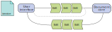

Reactive user interfaces
Because the frontend ❤ buzzwords
Jan Ypma
jyp@tradeshift.com
Agenda
- Rationale for rethinking documents and editing
- Something about languages and type safety…
- Editing architecture
- Demo
Documents in Tradeshift, 2017
- Monolith backend knows about at least 6 different document formats
- UBL, “jacksonified” JSON UBL, “official” JSON UBL, Portable (xml), Portable (JSON), Canonical
- These are not convertable into each other without loss
- Sending a document requires it to go through several message queues
- We have trouble growing HornetQ to our size
- Document “validations” are hardcoded, and scattered around many different places
- Document types are hardcoded
- Introducing a new document type requires changes in 15+ places
- As a result, existing document types have very varying behaviours
- Documents are isolated to one account
- Sending only happens once, and as an actual copy
Documents in Tradeshift, 2020
- Pipeline can send 100s of documents per second, and can scale to 1000s
- Format conversions are well-defined and isolated
- New document types and validations can be introduced by anyone on the Tradeshift network
- People can collaborate on documents in real-time, across legal regions
Event journal
.center[]
- Real-time collaboration requires delta updates
- No “replace content” API
- Instead, all edits must be saved as incremental changes
- Edits appear on the event stream
Writing a document editor
Traditionally .center[ ]
]
- Read the whole UBL XML document
- Transform it into a JSON variant
- Transform it into an in-memory structure
- Transform it into user interface elements
- User changed anything on the screen?
- Another user changed anything?
- Repeat the whole flow again
Writing a reactive document editor
- Define things that constitute changes to a document
let’s call them events (Redux: action, Elm: message)
.center[]
- Transform a stream of these changes directly into user interface elements
- User changed anything on the screen?
- Emit an event, and make sure it appears on the event stream
- Another user changed anything?
- Automatically handled as long as it hits the event stream
Intermezzo
What does this JavaScript do?
.smallright[_ * 2016, Otto Chrons, Scala.js for large and complex frontend apps_]
Intermezzo
Is this really JavaScript? Look again!
This is fully type-safe Scala code.
What is ScalaJS?
- Write Scala, compile to JavaScript, run in browser or NodeJS
- Supports 100% of Scala language
- Straightforward interop with JavaScript (even dynamic typing)
- As performant as hand-written JavaScript
- Generated JS code is “small enough”
- Our PoC: 1.6MB (that’s including ProtoBuf generated classes, full CLDR, streams library, everything).
- Fast edit-compile-run cycle
- Only a language, not an architecture
Why a better JavaScript?
- Types: testability, refactoring, discoverability
- More modular and expressive code
- One language across client and server
- Tool-friendly and better IDE support
State management
 state
state
- Our Event is
UBLDocumentEdit, a single edit to a document
- Define intermediate DTO classes that holds our on-screen state
- Immutable to make testing easier
- Returns updated instance as result of event
- Unit-testable outside of reactive framework
- State classes map to (virtual) DOM,
example render() function
Choosing ScalaJS for this application
- Not the first choice
- React + Redux + Typescript: not an obvious fit, not full type safety
- React + Redux (plain JS): Too verbose code (e.g. event matching)
- Elm: Small developer community, maturity
- But a very nice fit
- Very mature language and type system
- Built-in immutability, futures, pattern matching
- Surprisingly big community
Conclusion
- Real-time collaboration: working
- Reactive style increases testability and state management
- Language: type safety and pattern matching
- Code reuse between server and browser
Document-core architecture
.center[ ]
]
- document-core : storage, access control, legal state, regionality
- Plugins listen to its event journals and call back
- document type plugins : manage XSD for a particular type of document
- validator plugins : contribute to decide whether the legal state is OK to change to “sent”
- augmentor plugins : contribute additional edits whenever the document is changed (e.g. totals)
Document-core pipeline
.floatright[ ]
]
- Documents are not copied
- Sender and receiver use the same UUID
- Instead, document legal state is maintained
- Draft: people with write access can edit the document. Validation plugins contribute to whether the document is valid for sending or not
- Sent: document was valid, and now has legal status. In addition, receiver gets access (in default scenario)
- No way to undo sending
- No hard deletions (except for “wipe account” scenarios)
Pluggable document types
- What’s the big deal?
- Tradeshift Platform doesn’t want to OK every new doc type
- Allow teams, integrators, users to experiment
- But we do want some say on what’s stored as a document
- Pipeline implies knowing a sender and receiver
- Real-time editing needs common primitive building blocks
- UBL to the rescue: pluggable document types can use components from the following UBL namespaces, and group them into new aggregates
CommonAggregateComponents-2CommonBasicComponents-2CommonExtensionComponents-2QualifiedDataTypes-2UnqualifiedDataTypes-2- (and a few others)
- Document type plugin uploads an XSD to
document-core
- XSDs are identified by their namespace
xsd:annotation indicating what’s the sender and receiver
Multiple regions
.center[ ]
]
- Each document maintains a set of regions it is visible to
- Granting an off-region user access to the document adds to this list
- Only on the “home” region can a document be written to (edited)
- All other regions receive read-only copies of events
curl -v -X POST \
-H 'X-Tradeshift-ActorId: 784cfacd-8e63-4a08-b823-2c094aaf0f0c' \
-H 'X-Tradeshift-TenantId: a0b6e3f6-54e9-4bc1-bd82-f088466acee4' \
-H 'Content-Type:application/x-vnd.tradeshift.TSUBL' \
-d @document-core-server/src/test/resources/smallubl.xml \
http://localhost:8865/documents
curl -v \
-H 'X-Tradeshift-ActorId: 784cfacd-8e63-4a08-b823-2c094aaf0f0c' \
-H 'X-Tradeshift-TenantId: a0b6e3f6-54e9-4bc1-bd82-f088466acee4' \
http://localhost:8865/documents/3eaa4f97-1080-4db0-862d-7c810ebf8031 \
| xmllint --format -
http://localhost:8080/documents/3eaa4f97-1080-4db0-862d-7c810ebf8031
172.17.0.83
 ]
]
 ]
] ]
] ]
]